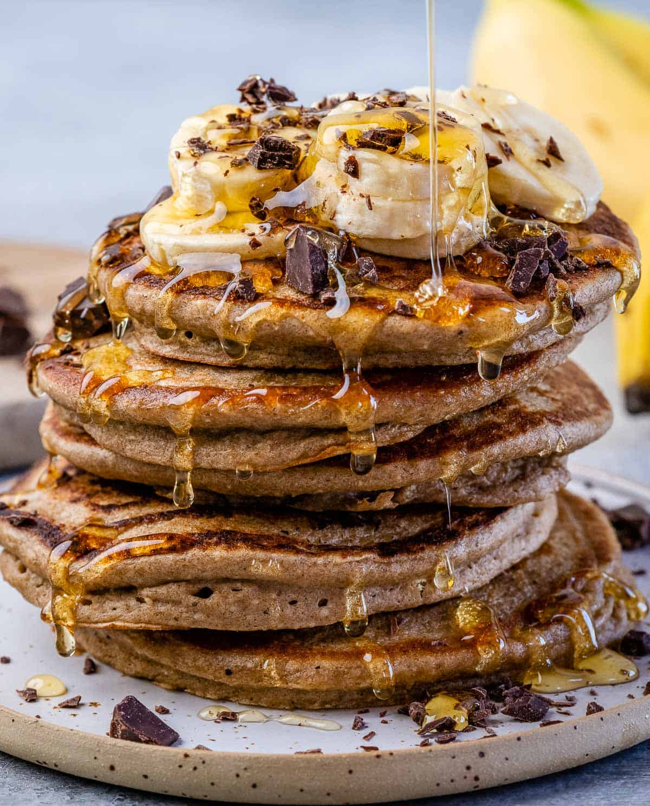
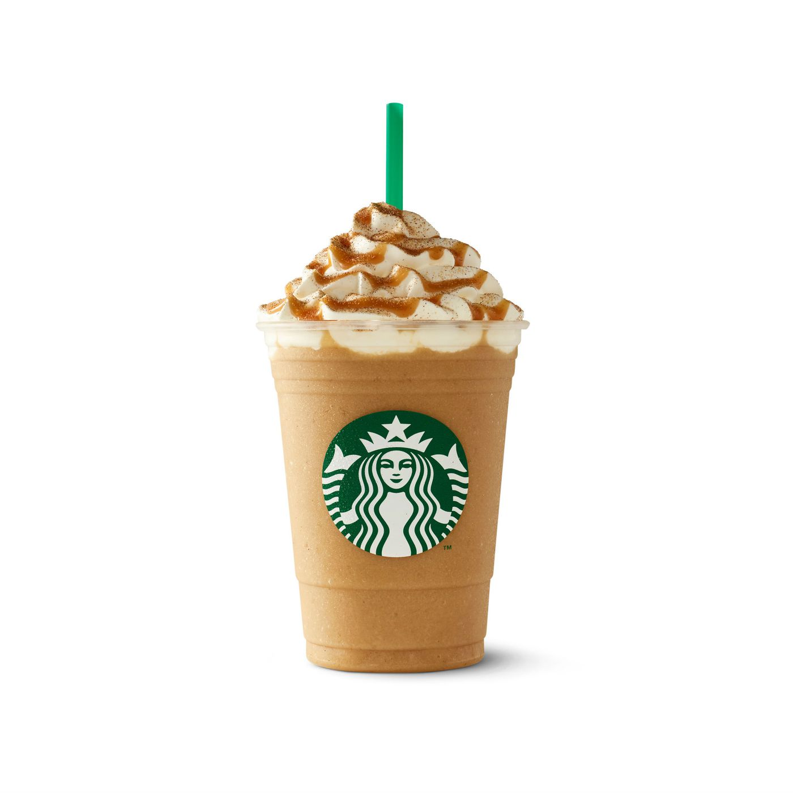
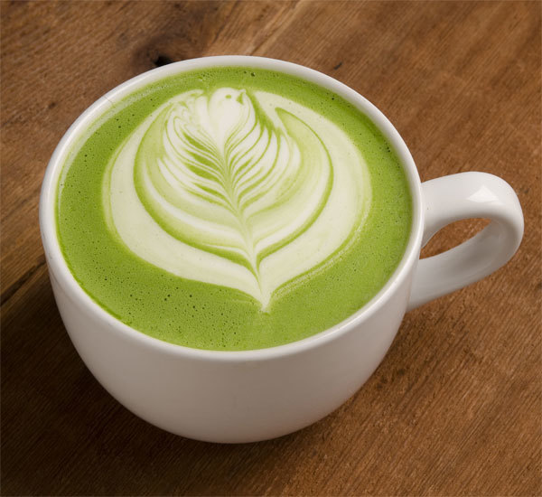
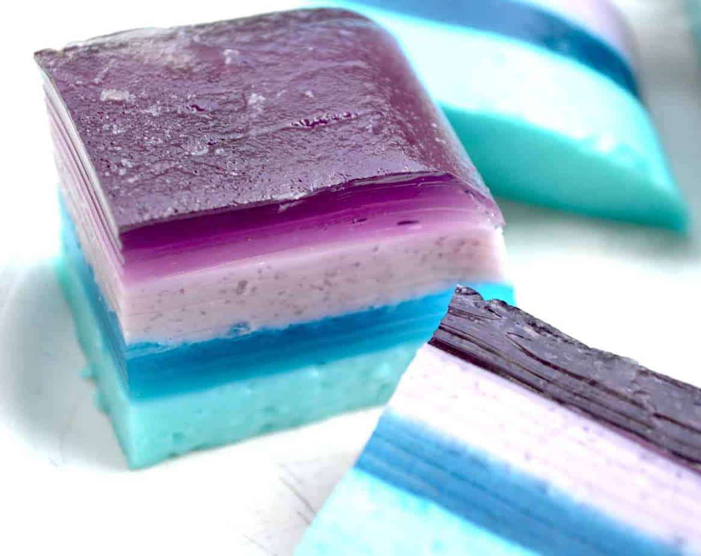

Sausage adds a smoky and spicy flavor to the mix of fried egg, mashrooms which is enhenced by melted cheese

Sausage adds a smoky and spicy flavor to the mix of fried egg, mashrooms which is enhenced by melted cheese
Whole grains, naturally sweetened, and use Greek yogurt, oatmeal pancakes keep breakfast on the yummy side of healthy. A touch of cinnamon and pure vanilla extract gives an amazing flavor and smell
Create the unique flavour you really enjoy by odering our Custom Breakfast Sandwich, where you choose your own ingredients

Buttery caramel syrup meets coffee, milk and ice in the blender and then served with cream and topping of your choice
Black, Grean or Fruit tea is slightly sweetened with syrup and hand-shaken with ice and lemon juice. Sour and fresh!

Smooth and creamy matcha is lightly sweetened and served with steamed milk
A mix of fresh strawberry, blueberry and raspberry
A dessert that is free from refined sugar and has an impressive mix of different fruits, nuts, cinnamon and cacao nibs